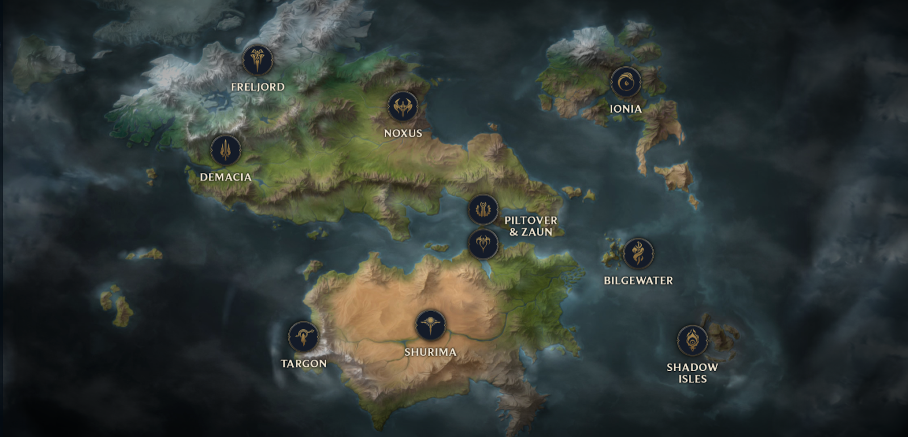

Co je to vůbec League of Legends ?

League of Legends (česky Liga Legend, LOL, Lolko) je multiplayer online battle arena
(hra, ve kterém se více
hráčů utká online v aréně)
Charakteristika hry:
Ve hře League of Legends vystupuje hráč jako vyvolávač, který ovládá v jednom zápase jediného šampiona s unikátními
vlastnostmi a bojuje spolu se svým týmem proti nepřátelskému týmu na jedné mapě. Cíl hry je obvykle zničit
nepřátelský Nexus, stavbu, která je na druhém konci mapy u základny druhého týmu. Hra též může skončit kapitulací
jednoho z týmu, a to po 15 minutách (všichni musí být pro) nebo po 20 minutách (většina musí být pro - kapitulace se
neuzná když jsou hlasy 3 z 5). Hráči hrají jednotlivé zápasy – podle režimu trvají 20-60 minut.
Každý zápas ve hře začínají šampioni obvykle s jednou schopností, které si postupem času vylepšují a zpřístupňují si
další (celkem 4 unikátní schopnosti, s výjimkami). Hráč má na začátku hry Level 1 a své schopnosti má všechny plně
vyvinuté až v pozdní fázi hry na Levelu 18. Na postup do dalšího levelu je potřeba sbírat tzv. expy – ty se
získávají pouhým pobytem na lajně, zabíjením jednotek a šampionů nebo asistencí na zabití. Postupem do dalšího
levelu se jednak zpřístupní možnost aktivovat/vylepšit schopnost, ale také postavě stoupnou tzv. staty – hodnoty
brnění, zdraví, many atd. Snaha mít co nejrychleji co nejvíce levelů zajištující náskok před protihráči je základní
mechanikou hry.
Jedná se o hru typu freemium – za reálné peníze lze koupit například skiny k postavám nebo samotné postavy, nelze s
nimi ale žádným způsobem ovlivnit průběh hry a šanci na výhru.
Vyvolávač může hrát za jakoukoliv postavu, kterou má koupenou anebo za postavy, kterou hra zdarma v tzv. bezplatné
týdenní rotaci. Ve hře je celkem 143 jedinečných postav. Každá postava má ve hře svůj příběh, pochází z určitého
regionu, má svoje 4 unikátní schopnosti + pasivní schopnost(i). Pokud postavy hrají proti sobě ve hře a jsou ze
stejného regionu nebo jsou v nějakém příbuzenském vztahu, mívají na sebe hlášky a v některých případech i posílené
schopnosti.
Ano, hráči se v této hře dělí na různé divize, které zobrazují jak jsou ve hře dobří za různé role. Toto celkem dobře znázorňuje tato tabulka
| Pozice | Role | ||
|---|---|---|---|
| Šampioni | |||
|
|
||
Pozice (linky) a role, za které můžete ve hře hrát.
| Divize | % hráčů | ||
|---|---|---|---|
| (Podle čísel od nejlepší po nejhorší) |
|
0.02% 0.05% 0.07% 3.87% 12.39% 28.47% 34.92% 17.52% 2.69% |
|
Divize a % toho, kolik hráčů se v dané divizi nachází.
Ano, a zde jsou opravdu rozsáhlé příběhy ohledně hry, postav, země ze kterých postavy pochází ba dokonce tradice těchto zemí a jaké mají mezi sebou vztahy. Příběh League of legends je vysoce rozsáhlý a tyto stránky pokrývají asi 1/3 (což by odpovídalo ohledně základních informací o příběhu hry) všeho co je v League of Legends. Všechno co se děje v League of Legends se děje v zemi zvané Runnetera. Zde je mapa Runnetery.
